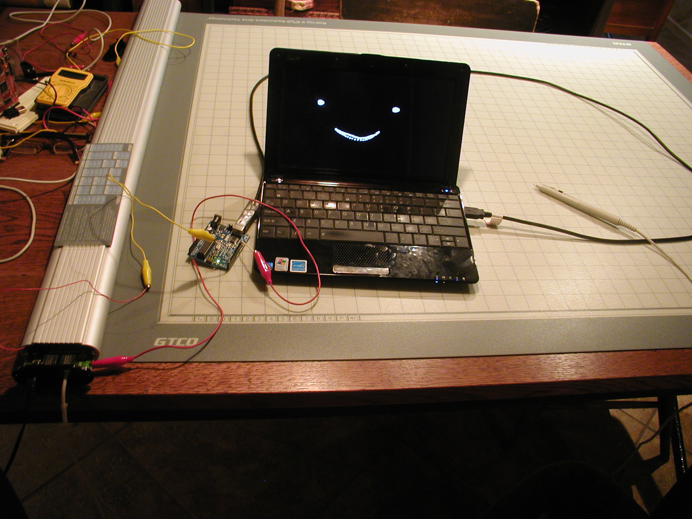

My father is an architect which is how we ended up with an architectural plan digitizer device gathering dust in our house. I thought it would be fun to use as an input device. It had a serial interface but I didn't have the right cables so I cracked the enclosure open and connected an Arduino to communicate with it.
I didn't have documentation for the protocol that it used but thankfully it volunteered data in a simple ASCII format. I made a simple Processing sketch which parsed the data and painted a circle wherever I touched the digitizer's pen to its surface.
Done in high school